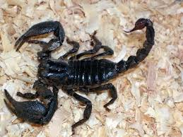
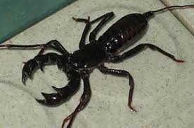

Với chiều dài lên đến 20 cm (7.9 inch), Bọ cạp hoàng đế là một trong những loài bọ cạp lớn nhất trên thế giới. Mặc dù có kích cỡ to lớn và vẻ ngoài đáng sợ, nhưng loài bọ cạp này không nguy hiểm đối với con người, đó cũng là lý do tại sao nó là một loài vật nuôi rất phổ biến trong số những người đam mê bọ cạp. Được tìm thấy chủ yếu trong những khu rừng mưa nhiệt đới và thảo nguyên ở Tây Phi, loài bọ cạp này có thể sống đến 8 năm
Trong tự nhiên, bọ cạp hoàng đế được cho là chủ yếu ăn mối. Trong điều kiện nuôi nhốt chúng dế mèn, gián, và mọt ngũ cốc. Bọ cáp vua cũng ăn chuột nhỏ và thằn lằn. Bò cạp hoàng đế đào hang bằng hai cặp chân đầu tiên. Hang là một lỗ rỗng dưới tảng đá. Trong tự nhiên, bò cạp hoàng đế làm hang ở tổ mối.
Bò cạp hoàng đế là mồi của các loài bò sát, động vật có vú và các loài lưỡng cư.